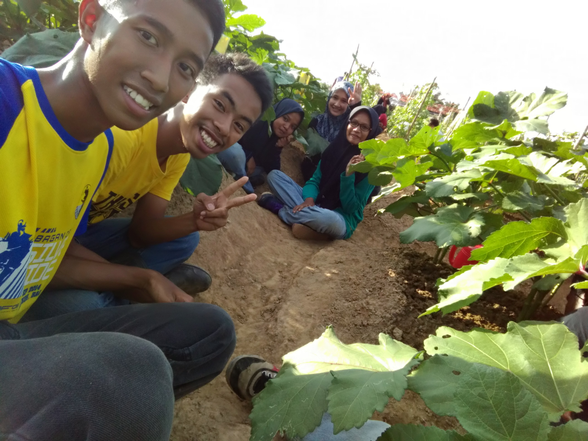
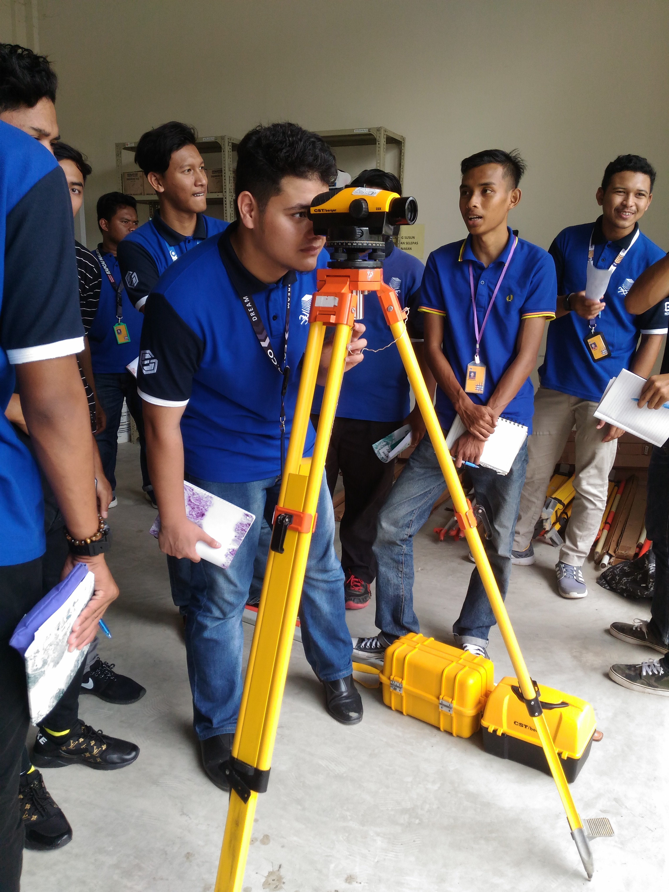
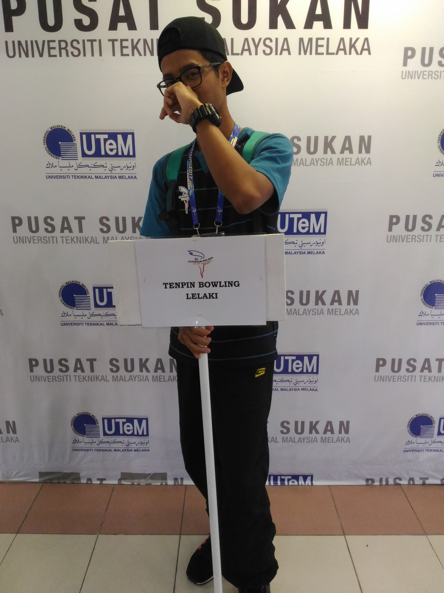
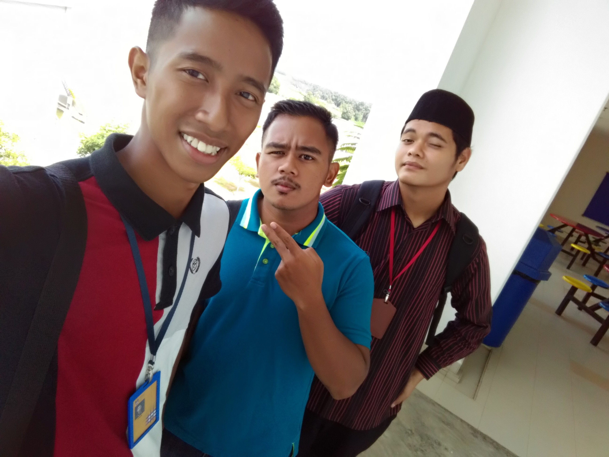
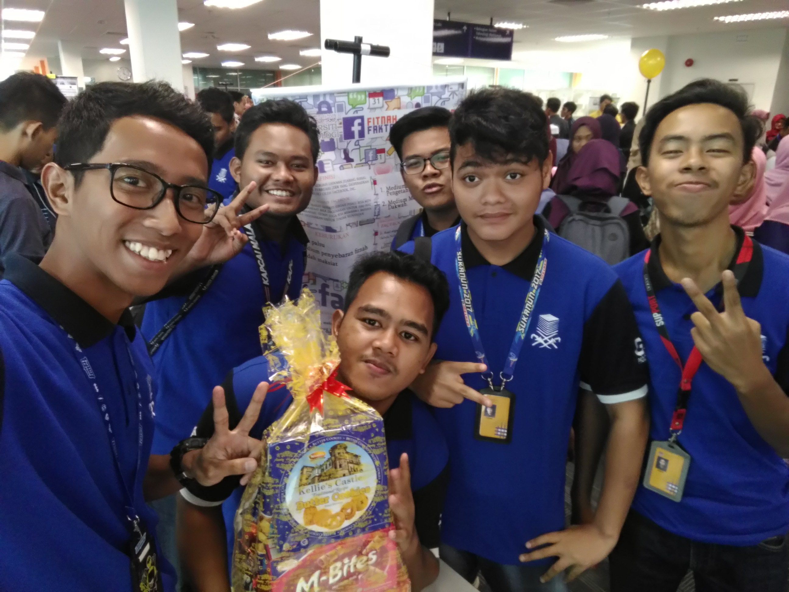
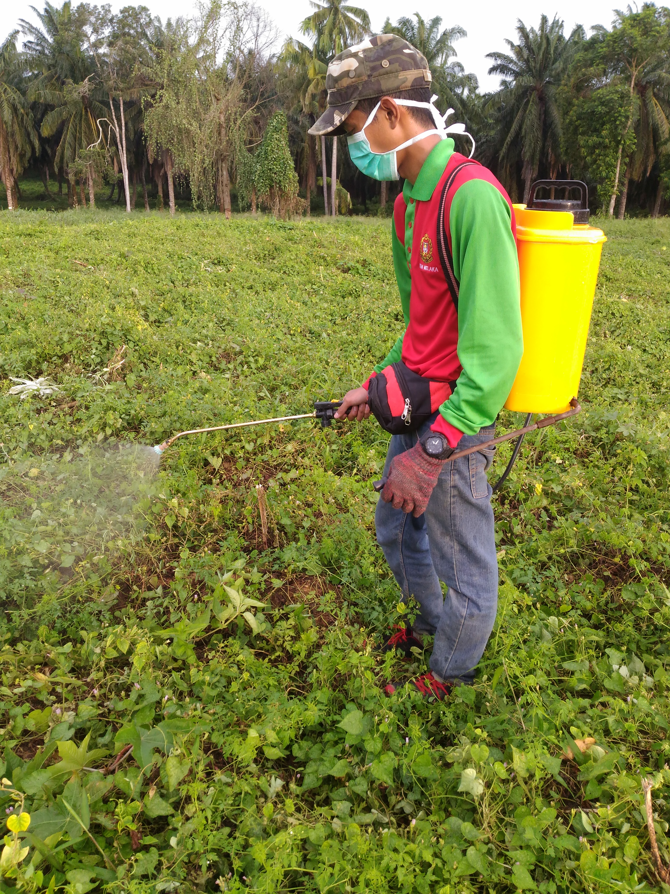
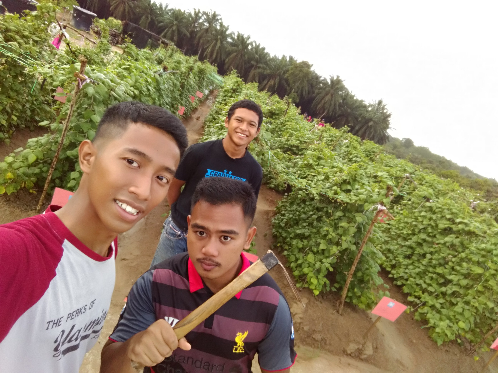
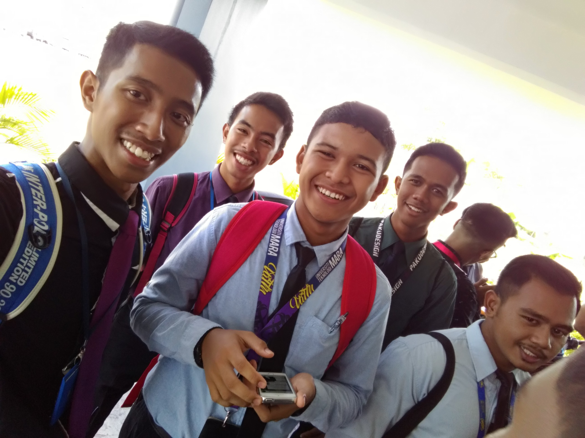
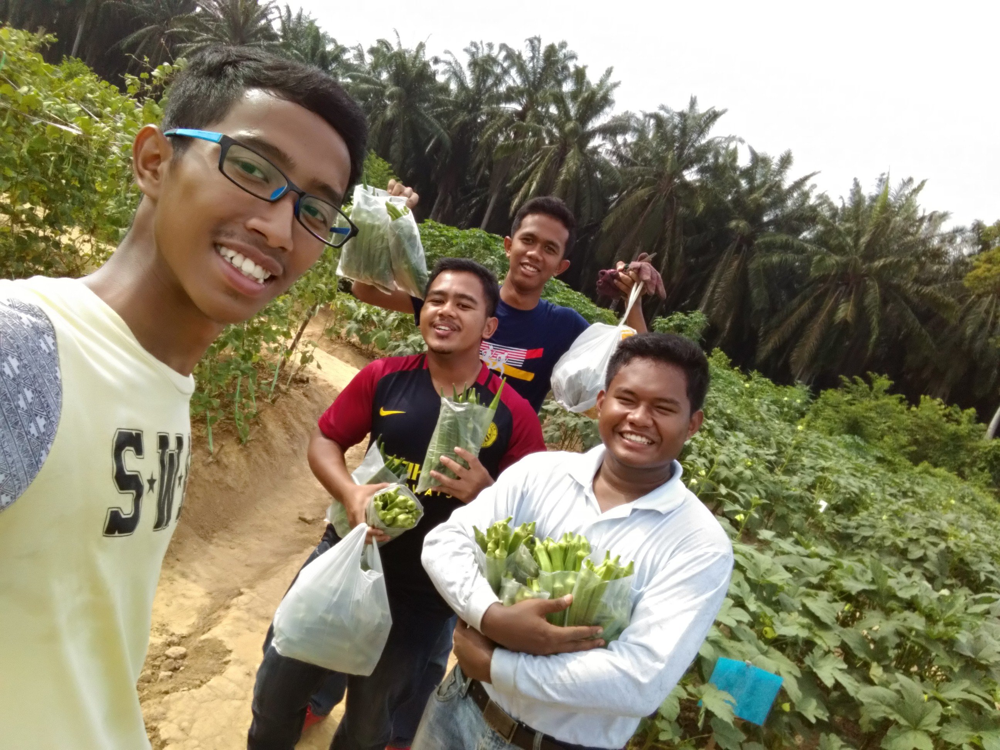
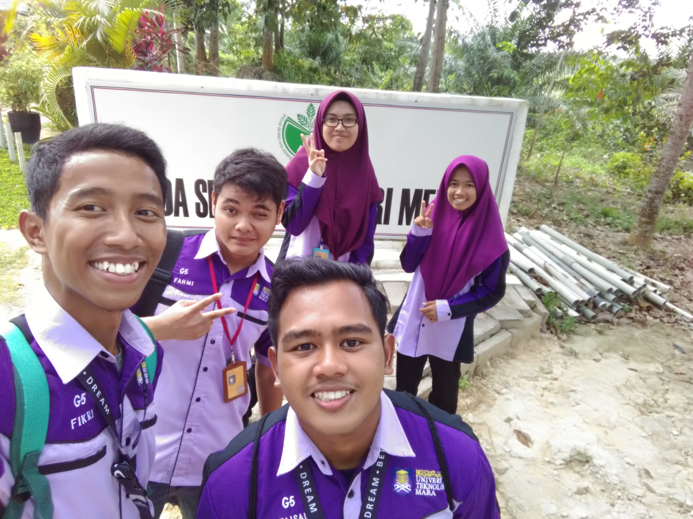

HOMEPAGE
BIODATA
EXPERIENCE
EDUCATION
FAMILY
GALLERY
HOBBY
Secondary School Life
At the end of the school session before the arrival of the biggest test for those of us who go to school is SPM. Our classmates held a year-end banquet and were able to gather all the students in my class and we invited our own class teacher, namely teacher Syahmi, the hostel wardens who were on duty at the time and our peers who lived in the dormitory to participate to enliven our event. We have been preparing since the time of Asr and alhamdulillah the ceremony went very lively and successfully.
Diploma Life

Summary of travel for 3 years diploma. I was able to pursue a Diploma in PLanting Industry Management at UiTM Jasin Melaka. It is only in this university that I know and have the meaning of real life. Many things I learned while pursuing this diploma. I also got a lot of contacts during this diploma. What was fun during the diploma was that we helped each other and cooperated in everything we did. Not just a class but a batch will help each other. The bittersweet experience I got I will never forget. Now only the most beautiful memories remain for me.